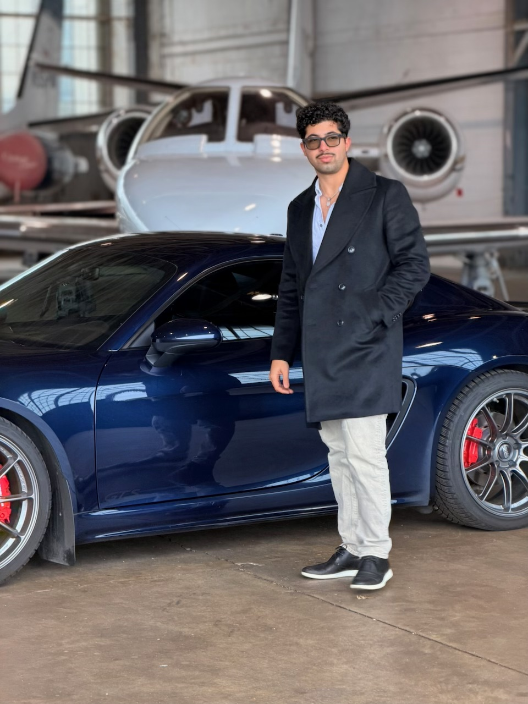
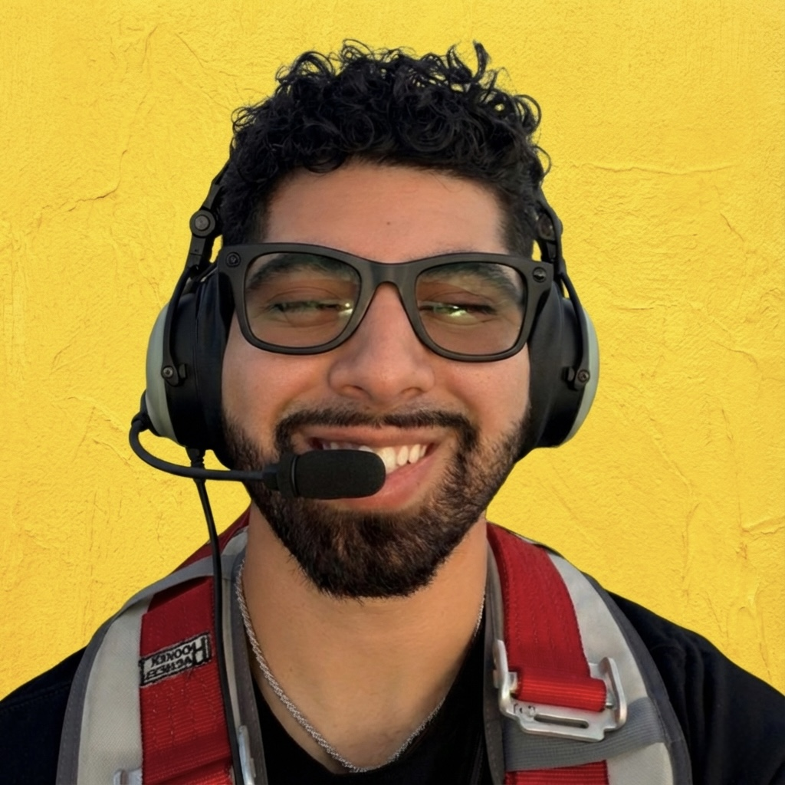

Accepting new students
Diego Suarez
Certified Ground Instructor · Working Toward CFI · Bowman Field (KLOU) · Louisville, KY
Contact Me
I'm Diego — Your Louisville Ground InstructorFAA Certified Ground Instructor working toward my Flight Instructor Certificate, based at Bowman Field (KLOU), Louisville, KY. I train Private, Instrument, and Commercial pilots in the Bristell NG5 LSA and Cessna 172 — patient, methodical, and built around your goals.

Certified Ground Instructor · Working Toward CFI · Bowman Field (KLOU) · Louisville, KY
Contact MeI fly out of Bowman Field (KLOU) in Louisville, Kentucky — one of the oldest continuously-operating airports in the country and a fantastic place to learn. My training blends disciplined, standards-based instruction with the kind of patience and clear communication that turns nervous first-flights into confident pilot-in-command decisions. Whether you're starting from zero, adding an instrument rating, or pushing toward commercial, every lesson is built around your goals and your schedule.
Louisville-based instruction focused on safe, confident pilots — from discovery flight to checkride.
Earn your FAA Private Pilot certificate from the ground up. Discovery flight, ground school, solo, cross-country, and checkride prep — in the Bristell NG5 LSA or Cessna 172 at KLOU.
Start trainingFly confidently in IMC and on IFR flight plans. Scenario-based IFR training with approaches, holds, and real-world cross-countries through the busy Louisville airspace.
Add the ratingBuild the precision and professionalism the FAA and future employers expect. Commercial maneuvers, complex ops, and checkride-grade standards — in the Bristell NG5 or 172.
Go commercialSimply Endorsed is my searchable FAA endorsement reference for the AC 61-65K library. It lets instructors and pilots jump straight to first solo, solo cross-country, private pilot checkride, commercial pilot checkride, instrument checkride, flight review, tailwheel, and other common endorsement paths without digging through the advisory circular from top to bottom every time.
Open the live Simply Endorsed tool to search by task, endorsement ID, FAR reference, alias, or checkride use case.
Open Simply EndorsedReview the usual A.3, A.4, A.6, and optional TSA citizenship sequence before a student solos.
Read the guideSee how A.9 and A.10 work together for the initial solo cross-country endorsement path.
Read the guideUnderstand the common private pilot checkride flow with A.36, A.37, A.2, and A.1.
Read the guideReview the commercial pilot recommendation path and the endorsements commonly grouped around it.
Read the guideSee why A.44 matters and how the instrument recommendation path differs from the private and commercial flows.
Read the guideUse the guide for A.69 and A.70 when pilots search for the flight review or BFR signoff path.
Read the guideJump straight to the tailwheel endorsement guide and the aircraft-endorsement group where A.75 lives.
Read the guideQuick answers to the questions new and returning students ask most often.
Ready for a discovery flight or have a quick question? Call, text, or email — I usually respond the same day.